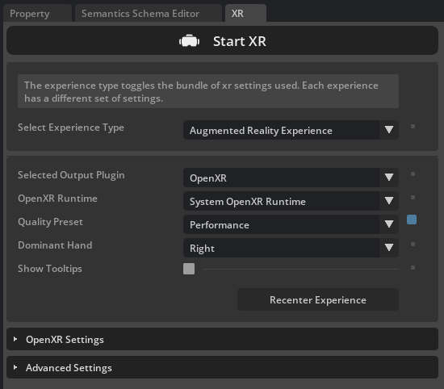
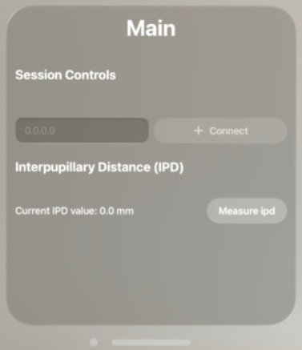

Step 1: Record Source Demonstrations#
Isaac AutoData consumes source demonstrations recorded as Isaac Lab HDF5 datasets (per-episode actions, initial state, and observations). This step collects a small set of successful teleoperated demonstrations of the humanoid pick-and-place task.
Unlike the single-arm Franka task — which can be teleoperated with a SpaceMouse or keyboard — the dexterous, bimanual humanoids are teleoperated with an Apple Vision Pro through NVIDIA IsaacTeleop and the CloudXR runtime. The headset’s wrist poses drive a differential IK controller per arm, and the finger joints are retargeted onto the robot’s hands. The AutoData development container includes Isaac Teleop so the flow below works out of the box.
Note
To skip recording (and annotation), use the pre-annotated source dataset that ships with the repository and jump to Step 3: Generate the Dataset:
datasets/annotated_datasets/dataset_gr1_annotated.hdf5
datasets/annotated_datasets/dataset_g1_annotated.hdf5
Note
For supported IsaacTeleop hardware, see Supported Input Devices, and review the IsaacTeleop system requirements before starting.
Important
A stable network connection meeting the CloudXR network requirements is required before starting the steps below.
Start the CloudXR Runtime#
The CloudXR runtime bridges the Apple Vision Pro and the simulator. Start it from the AutoData dev container. Leave it running in this terminal for the whole recording session.
On the host machine outside of the development container, configure the firewall to allow CloudXR traffic:
# Signaling (use one based on connection mode) sudo ufw allow 48010/tcp # Standard mode sudo ufw allow 48322/tcp # Secure mode # Video sudo ufw allow 47998/udp sudo ufw allow 48005/udp sudo ufw allow 48008/udp sudo ufw allow 48012/udp # Input sudo ufw allow 47999/udp # Audio sudo ufw allow 48000/udp sudo ufw allow 48002/udp
Start the AutoData dev container:
./docker/run_docker.sh
Create a CloudXR config file for the Apple Vision Pro:
printf '%s\n' 'NV_DEVICE_PROFILE=auto-native' 'NV_CXR_ENABLE_PUSH_DEVICES=0' > avp.env
Start the CloudXR runtime with that config:
python -m isaacteleop.cloudxr --cloudxr-env-config=avp.env
Attention
The first run prompts you to accept the NVIDIA CloudXR License Agreement. Reply Yes when
prompted:
NVIDIA CloudXR EULA must be accepted to run. View: https://github.com/NVIDIA/IsaacTeleop/blob/main/deps/cloudxr/CLOUDXR_LICENSE
Accept NVIDIA CloudXR EULA? [y/N]: Yes
Start Recording#
In another terminal, attach a second shell to the running AutoData container:
./docker/run_docker.sh
Activate the IsaacTeleop CloudXR environment settings written by the runtime:
source ~/.cloudxr/run/cloudxr.env
Important
Order matters.
source ~/.cloudxr/run/cloudxr.envafter the CloudXR runtime from the previous section is already running, and before you start the recording script — the app must inherit the CloudXR environment variables.Run the recording script. CPU simulation gives smoother XR performance with a single environment:
python submodules/IsaacLab-Arena/submodules/IsaacLab/scripts/tools/record_demos.py \ --task Isaac-PickPlace-GR1T2-Abs-v0 \ --viz kit \ --device cpu \ --xr \ --dataset_file ./datasets/dataset_gr1.hdf5 \ --num_demos 5
python submodules/IsaacLab-Arena/submodules/IsaacLab/scripts/tools/record_demos.py \ --task Isaac-PickPlace-Locomanipulation-G1-Abs-v0 \ --viz kit \ --device cpu \ --xr \ --dataset_file ./datasets/dataset_g1.hdf5 \ --num_demos 5
In the running application window, press the Start XR button under the XR tab on the right side of the screen.

{kind=link}
Connect the Apple Vision Pro and Record#
For detailed connection instructions, see Connect an XR Device in the Isaac Lab docs.
On the Apple Vision Pro, launch the Isaac XR Teleop app.
Enter your workstation’s IP address and connect.
Before pressing Connect, pinch the bar at the bottom of the CloudXR controls window and move it closer and to your left, so nearby objects don’t occlude it.
Press Connect and wait until you see the simulation in VR.
{kind=link}

CloudXR control panel — move this window to your left to avoid occlusion by nearby objects.#
Once connected, complete the pick-and-place task:
Your hands control the robot’s hands; your fingers control the robot’s fingers.
On task completion the environment resets automatically.
Repeat until all
--num_demos(5 above) successful demonstrations are recorded; the script then shuts down and saves the dataset.
Performing the Demonstrations#
The humanoid pick-and-place task is set up so the left hand has a single subtask (a pick up and transport) while the right hand has two (an idle phase, then the place). During the idle phase the right hand should stay still while the left hand brings the object to a position where the right hand will grasp it. This lets DexMimicGen interpolate the right hand’s trajectory accurately from the object’s pose when scenes are randomized. Avoid moving the right hand while the left hand is picking up the object.
Tip
For best results during the recording session:
Move slowly and smoothly, and keep your hands within the tracking volume.
Take a direct path toward the goal instead of following axes.
Avoid extended pauses — smooth, continuous motion with brief pauses is easier to learn than unexplained stops.
Ensure good lighting for hand tracking, and collect at least 5 successful demonstrations.


Expected Output#
Verify the datasets contain the recorded episodes using:
python scripts/validate_dataset.py datasets/dataset_gr1.hdf5
python scripts/validate_dataset.py datasets/dataset_g1.hdf5
Continue to Step 2: Annotate Demonstrations.